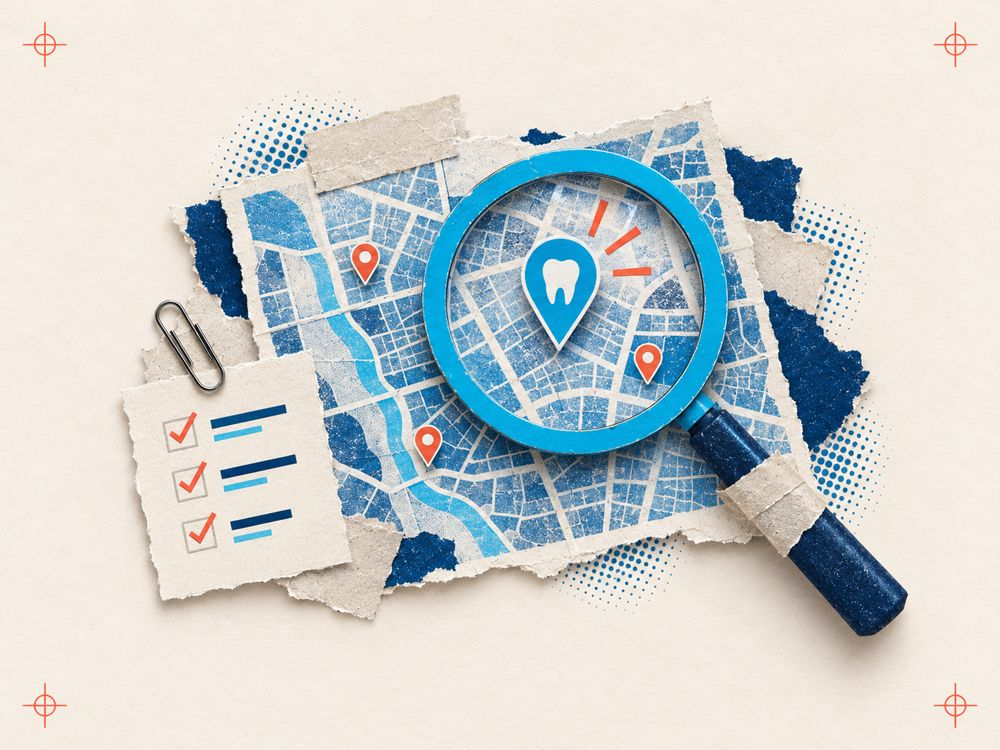

Рейтинг и отзывы
На них смотрят в первую очередь. Важны свежие отзывы и ответы клиники.
Основа · наша специализация
Упаковываем и ведём карточку клиники.
Пациент ищет стоматологию рядом с домом и сравнивает карточки на карте: рейтинг, отзывы, фото, цены. Заполняем карточку так, чтобы в ней были ответы на его вопросы, и поддерживаем её каждый месяц.
Зачем
Человек открывает карту, чтобы найти стоматологию рядом с домом или работой. В списке несколько клиник, и он сравнивает их карточки.
На них смотрят в первую очередь. Важны свежие отзывы и ответы клиники.
Карточка с ценами отвечает на главный вопрос ещё до перехода на сайт.
Вход, кабинеты, оборудование и врачи с именами показывают, куда человек придёт.
Телефон, часы работы и кнопка записи должны быть верными. Иначе обращение теряется.
Упаковка карточки
Работаем в кабинете Яндекс Бизнеса клиники. Доступ остаётся у вас.
Название, адрес, телефон, часы работы, сайт и рубрики.
Прайс по направлениям с теми же ценами, что в клинике.
Вход, интерьер, кабинеты, оборудование. Подскажем, что стоит доснять.
Специалисты клиники с именами и специализацией.
Готовим ответы от имени клиники. Подсказываем, как просить пациентов об отзыве.
Кнопка записи и публикации о клинике в карточке.
Звонки, маршруты и переходы на сайт из карточки.
Рекламная подписка Яндекс Бизнеса
Подписка усиливает уже заполненную карточку. Подключать её или нет, решает клиника. На диагностике покажем, стоит ли это делать в вашем районе.
Как идёт работа
Срок упаковки называем после диагностики: он зависит от того, сколько материалов уже есть у клиники.
Смотрим, что заполнено, какие отзывы и как выглядят карточки клиник рядом.
Заполняем данные, услуги, цены, фото и врачей. Всё согласуем с клиникой.
Готовим ответы на новые отзывы. Спорные ответы согласуем с клиникой.
Цены, фото, новости. Карточка не устаревает.
Показы карточки, звонки, маршруты и переходы на сайт.
Чего не делаем
Яндекс находит накрученные отзывы и может скрыть рейтинг карточки. Место в списке клиник определяет Яндекс: оно зависит от расстояния до пациента, отзывов и заполненности карточки.
Яндекс Карты отдельно
после диагностики
В комплексном маркетинге карточка входит в первый этап за 85 000 ₽.
Цена
Она зависит от состояния карточки и числа филиалов. В комплексном маркетинге упаковка карточки входит в первый этап.
Вопросы
Не нашли свой вопрос? Задайте его на диагностике.
Стоимость отдельной услуги называем после диагностики. В комплексном маркетинге упаковка карточки входит в первый этап за 85 000 ₽, а ведение в подписку за 65 000 ₽ в месяц.
Не всегда. Сначала заполняем карточку, потом смотрим статистику и конкуренцию в районе и советуем, подключать ли подписку. Платит за неё клиника напрямую Яндексу, минимальный срок 90 дней.
Нет. Порядок клиник определяет Яндекс: учитываются расстояние до пациента, отзывы, заполненность карточки и другие факторы. Мы отвечаем за карточку и работу с отзывами.
Только если отзыв нарушает правила Яндекса: тогда подаём жалобу. На честный негативный отзыв готовим спокойный ответ от имени клиники.
Нет. Поддельные отзывы не пишем и не покупаем. Помогаем клинике просить об отзыве настоящих пациентов.
Клинике. Кабинет Яндекс Бизнеса оформлен на вас, мы работаем в нём как представитель. Если перестанем работать вместе, карточка и доступ остаются у клиники.
Да. Это отдельная услуга «Площадки и отзывы»: 2ГИС, ПроДокторов и Zoon.
Первый шаг
Диагностика бесплатная и ни к чему не обязывает. Покажем, чего не хватает карточке и с чего начать.
